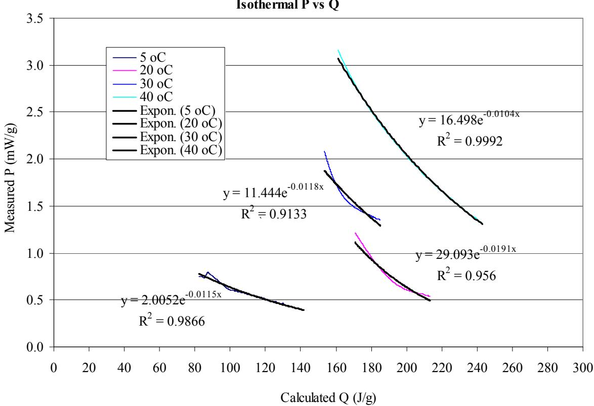
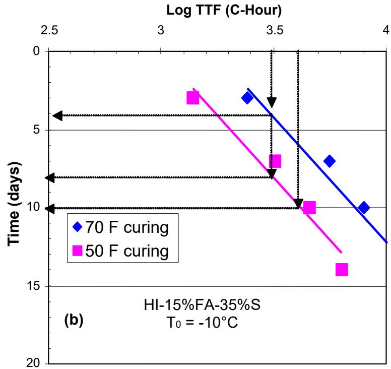
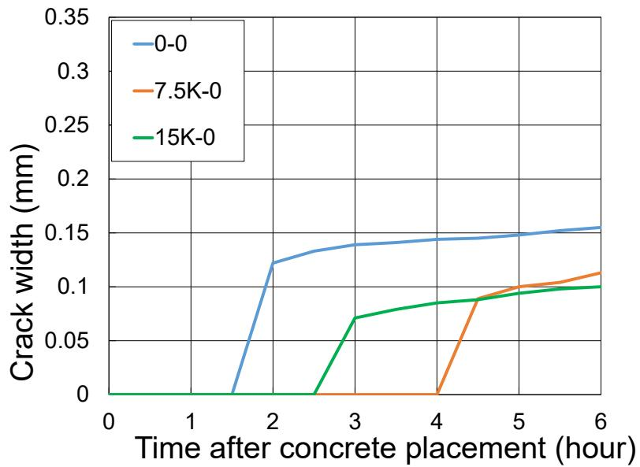
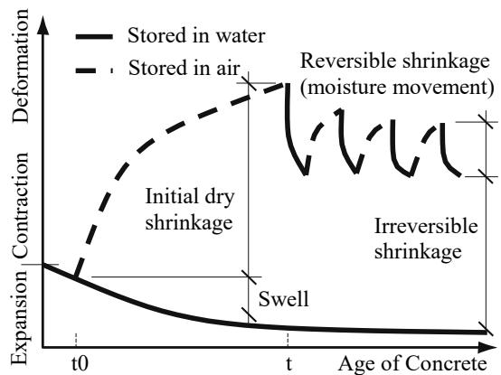

Concrete Curing
Concrete curing is the essential process of maintaining adequate moisture and temperature conditions within freshly placed cementitious materials to facilitate hydraulic hydration and pozzolanic reactions for a sufficient period. This chemical reaction is exothermic, generating heat that governs setting behavior, strength development, and microstructure formation while transitioning the material from a plastic state to a hardened solid [1] [2]. By preventing premature desiccation and managing thermal gradients, curing ensures that hydration products adequately fill pore structures, thereby refining the matrix density and reducing permeability [3] [4]. Proper moisture retention is critical for developing design strength and long-term durability, as it mitigates early-age defects such as plastic shrinkage cracking, surface raveling, and scaling susceptibility [5] [6]. The effectiveness of curing is particularly significant for mixtures containing supplementary cementitious materials or low water-to-cement ratios, which require extended moist periods to fully develop their potential benefits and mechanical properties [7].
CP Tech Center reports covering “Concrete Curing” also include the following subtopics: Curing Compounds, Internal Curing, and VDOT Accelerated Curing Regime.
Concrete curing manages the moisture and temperature conditions necessary for proper hydration, ensuring the material achieves its intended performance. Curing Compounds function as external surface membranes that retain moisture and regulate thermal gradients to prevent early-age distresses such as curling, warping, or cracking. Internal Curing sustains cement hydration and mitigates autogenous shrinkage by releasing stored water from within the concrete matrix to counteract early-age moisture deficits. VDOT Accelerated Curing Regime functions as a specialized concrete curing protocol by employing controlled thermal and chemical conditions to rapidly develop early-age strength and durability in supplementary cementitious material mixtures.
Sources (28)
Sub-concepts (3)
Key findings
- Showed that calorimetry testing serves as a versatile method for monitoring concrete curing performance by detecting deviations in constituent quantities through the measurement of cement hydration heat evolution, with isothermal calorimeters suitable for daily quality control and semi-adiabatic tests recommended for predictive modeling [1] [2].
- Measured that internal curing using lightweight fine aggregate improves concrete durability by reducing permeability and increasing surface resistivity without significantly altering mechanical properties or structural performance compared to conventional mixes [8] [9].
- Found that standard ASTM testing methods exhibit high variability and fail to account for key environmental variables like wind and solar radiation, while the sorptivity test proved most sensitive in detecting subtle microstructural changes caused by different curing materials [3].
- Demonstrated that concrete curing performance with blended cements is critically dependent on temperature, as lower temperatures significantly delay setting and early-age strength development compared to normal conditions [7].
- Identified that traditional curing methods are increasingly inadequate for modern demands such as rapid reconstruction and extreme weather, highlighting a need for advanced materials based on performance criteria rather than proprietary standards [10].
- Observed that concrete durability is compromised by multiple interacting deterioration mechanisms, with poor curing practices identified as a critical construction failure that initiates plastic shrinkage cracking and accelerates internal deterioration processes [11].
- Found that proper curing is essential for minimizing uncontrolled shrinkage cracking in self-consolidating concrete, with extended moist curing significantly reducing drying shrinkage and improving resistance to cracking compared to shorter or less effective regimes [12].
- Revealed that standard liquid membrane-forming compounds are largely ineffective for pervious concrete because they only seal the surface and fail to prevent internal evaporation, whereas covering with plastic sheets provided the best abrasion resistance and flexural strength [5].
Accelerated Curing Protocols and Performance Monitoring
Evidence: 18 reports (15 primary)
Concrete hydration is an exothermic chemical reaction that transforms cementitious materials from a plastic state into a hardened solid, with the rate and magnitude of heat release serving as a fundamental indicator of maturity and early-age performance [2]. The kinetics of this hydration process are highly sensitive to environmental temperature, where elevated conditions accelerate strength development and reduce setting times while lower temperatures significantly delay these processes [2]. The inclusion of supplementary cementitious materials modifies hydration kinetics by typically extending initial set times and altering the heat evolution profile compared to plain portland cement mixes, making performance highly sensitive to curing temperature regimes [7] [2]. Monitoring thermal characteristics through calorimetry allows for the detection of material incompatibilities, prediction of set times, and assessment of early-age risks such as thermal cracking, thereby enabling the adjustment of construction practices to ensure desired durability [1] [2].
The following figure illustrates how varying curing temperatures influence the heat evolution profile during the hydration of Type I cement.
 Effect of curing temperature on heat of hydration (Type I cement) [1]
Effect of curing temperature on heat of hydration (Type I cement) [1]
The figure plots the rate of heat generation against time for Type I cement subjected to four different constant temperatures. Cement hydration is accelerated at early ages under high environmental temperatures but is decelerated later on.
Research problem — Standard maturity methods and datum temperatures derived from ordinary Portland cement often yield inaccurate strength estimates for blended concretes, creating a risk of premature traffic opening or structural damage due to mismatched hydration kinetics [7]. Existing field monitoring technologies face significant reliability and durability challenges, while standard laboratory test methods fail to accurately predict in-situ thermal behavior or evaluate the effectiveness of curing on surface durability [13] [3] [2]. Accelerated construction schedules and thin overlay applications demand precise timing for traffic opening and joint sawing, requiring robust protocols that balance rapid strength development with the prevention of early-age cracking [14] [15] [16] [17].
State of the art — The industry is transitioning from fixed-time protocols to performance-based acceptance criteria that utilize maturity monitoring and predictive modeling tools like HIPERPAV to determine traffic opening times based on real-time strength development rather than generic assumptions [7] [10]. Calorimetry has emerged as a critical quality control tool for assessing early-age hydration kinetics and thermal cracking risks, with isothermal testing serving as an economical method for daily mix verification and semi-adiabatic testing providing field-representative data for performance prediction [1] [2]. Standard laboratory curing protocols are increasingly being modified to better reflect field conditions for mixtures containing supplementary cementitious materials, addressing the limitations of traditional methods that often fail to correlate with actual durability outcomes [18] [19].
The following figure illustrates the exponential equations used to approximate the relationship between P and Q.

Exponential equations to approximate P vs. Q [2]The figure displays a graph of Measured Heat Evolution Rate (P) versus Calculated Heat State (Q), showing data curves for four different isothermal temperatures. Exponential regression equations are fitted to the experimental points, demonstrating that this mathematical model can predict hydration trends at longer time periods beyond the test range.
Findings from the reports
- Maturity-based strength estimation enables early opening to traffic in thin overlays and patches, allowing project timelines to be reduced while ensuring sufficient structural integrity [15] [16] [17].
- Curing temperature significantly influences concrete performance, where cold conditions delay setting and strength development while elevated temperatures accelerate hydration but narrow the setting window [7] [2].
- Concrete containing supplementary cementitious materials exhibits higher datum temperatures than ordinary portland cement, necessitating adjusted maturity calculations to avoid premature traffic opening based on standard correlations [7] [1].
- Calorimetry serves as a unified tool for monitoring curing by predicting set times and detecting material incompatibilities, with semi-adiabatic testing providing superior field replication compared to isothermal methods [1] [2].
- Curing compounds effectively reduce sorptivity and enhance near-surface microstructure, but their application timing must precede surface evaporation to ensure full coverage and effectiveness [3] [20].
- The VDOT accelerated curing regime can induce severe deicer scaling due to excessive saturation, which is mitigated by adding a drying period before pre-saturation or by using standard curing for slag blends [18] [19].
- Membrane-forming curing compounds can eliminate the photocatalytic self-cleaning properties of concrete by blocking pollutant contact with the surface [21].
- Standard liquid membrane-forming compounds are largely ineffective for pervious concrete because they seal only the surface and fail to prevent internal moisture loss from high porosity and exposed bottoms [5].
- Revealed that traditional curing methods are increasingly inadequate for modern demands and highlighted a critical need to develop advanced curing materials based on performance-based functional specifications rather than proprietary product standards [10].
- Accelerated curing protocols that utilize high-alumina cements or rapid-strength admixtures generated significant heat of hydration and autogenous shrinkage, which compromised freeze-thaw resistance if not mitigated by extended curing periods or internal curing agents [4].
- Managing high ambient temperatures through pre-cooling of existing asphalt bases via evaporation was necessary to prevent accelerated hydration and potential bond or strength issues during concrete placement [13].
Novelty & rigor — Recent research introduces a novel methodology that integrates simple isothermal calorimetry with computational modeling to predict concrete hydration and thermal cracking risks, offering a faster and more economical alternative to traditional semi-adiabatic testing [1] [2]. The field has shifted toward performance-based specifications that utilize real-time maturity monitoring and intelligent construction systems to dynamically adjust curing protocols based on actual strength gain rather than fixed calendar durations [13] [10] [17]. Reproducibility in accelerated curing assessments is enhanced by standardized data exchange schemas and the use of specific sensor networks that validate moisture retention and temperature profiles under varying environmental conditions [10] [22].
The following figure illustrates isothermal calorimetry results obtained from US 71 field concrete samples in Atlantic, Iowa.
 Isothermal calorimetry results for US 71 (Atlantic, IA) field concrete samples [2]
Isothermal calorimetry results for US 71 (Atlantic, IA) field concrete samples [2]
The figure displays the rate of heat evolution over time for four different dates in June and July.
Reported values
| Parameter | Value | Context | Source |
|---|---|---|---|
| slag content | 35 percent | concrete slabs subjected to ASTM C672 | [18] |
| base temperature threshold | 100 degrees Fahrenheit | ACC base before spraying with water | [13] |
| curing compound application rate | 1600 | White curing compound on exposed portions of the slab | [13] |
| cold weather curing temperature | 50°F | pavement traffic opening determination | [7] |
| curing temperature | 50°F | cold weather | [7] |
| minimum overlay mix temperature | 65°F | cool-weather placement of thinner concrete overlays | [20] |
| curing duration | 21 days | VDOT accelerated procedure at 100ºF | [19] |
| curing duration | 7 days | VDOT accelerated procedure at 73ºF | [19] |
| heat generation period | 5 to 10 hours | after mixing | [4] |
| time for opening to traffic | 3 to 4 hours | LMC-VE polymer overlays | [4] |
| time since last significant change in curing methods | 30 years | concrete paving | [10] |
| final set time | 3.0 hours | with water reducer added | [1] |
| final set time | 8.4 hours | without water reducer | [1] |
| final set time difference | 0.4 hours | comparison between thermal set times and ASTM C403 penetration resistance tests | [2] |
| flexural strength | 350 psi | after paving | [17] |
14 more distinct values omitted here; the full span-verified set is in the quantities sidecar.
Across the reviewed reports, accelerated curing protocols and performance monitoring rely on maturity-based strength estimation to determine safe opening times, though the reliability of these predictions varies significantly depending on whether standard or specialized mixtures are used. While accelerated curing regimes effectively reduce permeability in fly ash mixes, they can induce severe deicer scaling in slag cement concrete if not followed by adequate drying periods, indicating that such protocols do not reliably replicate long-term field durability for all supplementary cementitious material blends. Calorimetry serves as a unified monitoring tool to predict setting times and identify material incompatibilities, with semi-adiabatic testing providing superior accuracy for predictive modeling compared to isothermal methods due to its better replication of in-situ thermal conditions. Environmental temperature fundamentally governs curing kinetics by inversely controlling thermal set times and heat generation rates, necessitating adjusted maturity calculations for concretes containing supplementary cementitious materials to avoid premature traffic opening. [18] [7] [19] [16] [1] [2]
The following figure illustrates how variations in cement type and ambient temperature directly influence these critical setting times.
 Effect of cement type and temperature on set times [1]
Effect of cement type and temperature on set times [1]
The figure displays a bar chart comparing the final set time across three different mixtures (labeled III, I, and ISM) at four distinct temperatures. For each mixture type, the bars representing lower temperatures are taller than those for higher temperatures, indicating that set times increase as temperature decreases. The addition of fly ash increased both initial and final set times regardless of curing temperature, which is consistent with previous research results. Set times increase as the temperature decrease. The effect of temperature is more apparent for high fly ash replacement levels.
Implications — Standardized maturity protocols relying on fixed datum temperatures are inadequate for blended cements, necessitating site-specific strength-maturity correlations to prevent premature traffic opening in cold weather [7]. Integrating semi-adiabatic calorimetry data into predictive modeling software significantly enhances the reliability of forecasting thermal cracking risks and optimal saw-cutting times compared to using generic chemical database values [18] [2]. Accelerated curing strategies require a life-cycle cost analysis that weighs reduced user delays against higher initial construction expenses, justifying their use primarily in high-traffic environments where early opening yields significant economic benefits [4].
The following figure illustrates how varying curing temperatures directly influence the relationship between concrete strength and time-to-failure.

Effect of curing temperature on the strength-TTF-time correlation for a concrete mixture containing fly ash and slag. [7]The data demonstrates that lower curing temperatures result in a slower rate of strength development over time compared to higher temperatures. This relationship is critical for managing thermal gradients and preventing early-age defects such as cracking, which can occur if traffic loads are applied before the concrete has sufficiently hardened.
Limitations — Standard maturity-based protocols often fail to accurately predict strength development in concrete containing supplementary cementitious materials, as generic constants do not account for the variable activation energies and datum temperatures of blended cements [7]. Calorimetry-based monitoring methods lack the sensitivity to reliably detect changes in water-cement ratios or consistently capture secondary hydration peaks, while derivative-based set time determinations remain sensitive to environmental noise and extraneous data peaks [1] [2]. Current standard testing methods for curing effectiveness are insufficient because they do not account for extreme environmental variables such as wind velocity and solar radiation, nor do they adequately assess the near-surface concrete zone where curing impacts are most critical [3]. Prescriptive specifications often fail to capture complex interactions between material variability and environmental factors, creating a gap in performance-based guidance for optimizing mixtures under varying ambient conditions [23].
Fundamentals of Shrinkage Mitigation and Durability
Evidence: 14 reports (8 primary)
Concrete is inherently brittle with low tensile strength, making it susceptible to cracking when subjected to tensile stresses induced by shrinkage or external loads [24]. Curing maintains adequate moisture and temperature within freshly placed concrete to facilitate cement hydration, which refines the pore structure and enhances durability by reducing permeability and resistance to moisture ingress [3] [5] [4]. Internal curing utilizes water-retaining materials integrated directly into the mix to serve as internal moisture reservoirs, providing water from within the system to promote more complete hydration and reduce autogenous shrinkage in low water-to-cement ratio concretes [8] [25] [9] [26]. Proper curing minimizes early-age shrinkage and thermal cracking while improving long-term mechanical properties, thereby enhancing the concrete’s ability to resist environmental stressors such as freeze-thaw cycles and chloride penetration [4] [27].
The figure below illustrates the differences between conventional curing and internal curing methods.
 Comparison of external and internal curing mechanisms in concrete specimens. [9]
Comparison of external and internal curing mechanisms in concrete specimens. [9]
The figure illustrates the difference between conventional external curing, where water penetrates from the surface, and internal curing, which utilizes pre-saturated lightweight aggregates to release moisture within the matrix. In the ‘Internal curing’ row, blue circles representing ‘Water filled intrusion’ are shown releasing water into the surrounding grey cement paste, creating a ‘Cured zone’.
Research problem — Early-age shrinkage cracking creates permeable pathways that allow corrosive agents to ingress, thereby accelerating deterioration mechanisms such as rebar corrosion and alkali-silica reactivity while compromising structural integrity [11] [12] [24]. Low water-to-cementitious materials ratios in modern mix designs lead to insufficient system water for complete hydration, resulting in premature pore drying and increased risks of autogenous shrinkage and cracking [8] [26]. Accelerated curing protocols and additive manufacturing techniques introduce heightened susceptibility to thermal and plastic shrinkage cracking due to rapid heat generation and the conflict between flowability requirements and early-age strength development [6] [4]. Non-uniform temperature and moisture gradients induce curling and warping stresses that are difficult to predict accurately, creating complex failure modes exacerbated by improper curing duration or membrane durability [28].
State of the art — Current best practices emphasize that proper moisture retention is critical to preventing plastic shrinkage cracking, which serves as an entry point for deterioration mechanisms such as alkali-silica reactivity and freeze-thaw damage [11]. Internal curing using water-retaining materials like lightweight aggregates or superabsorbent polymers is now recognized as a method to mitigate autogenous and plastic shrinkage while enhancing durability in low water-to-cement ratio mixes [8] [9]. Effective mitigation relies on a holistic approach integrating material selection, such as using supplementary cementitious materials to reduce capillary pressure, with construction timing and design features to lower shrinkage stresses [24] [28].
The following figure illustrates the onset and rate of plastic shrinkage cracking for specimens with varying internal curing agent contents.

Onset and rate of plastic shrinkage cracking for Specimens 0-0, 7.5K-0, and 15K-0 [24]The figure plots crack width in millimeters against time after concrete placement to compare the onset and progression of plastic shrinkage across three different specimen types. The data demonstrates that the specimen labeled 15K-0 exhibits a delayed onset of cracking and lower final crack widths compared to the control, illustrating how specific mix modifications can effectively reduce this defect.
Findings from the reports
- Demonstrated that insufficient or delayed curing initiates plastic shrinkage cracking, which compromises durability by allowing water ingress that accelerates deterioration mechanisms such as alkali-silica reactivity and freeze-thaw damage [11].
- Revealed that extended moist curing significantly reduces drying shrinkage and improves crack resistance in self-consolidating concrete compared to shorter durations or membrane-forming compounds alone [12].
- Showed that internal curing mitigates autogenous and plastic shrinkage cracking by supplying water from within the matrix, thereby sustaining hydration in low water-to-cementitious ratio mixtures without negatively impacting mechanical strength [9].
- Identified that prompt moisture retention immediately after deposition is critical for 3D-printed concrete to prevent rapid evaporation, slump loss, and plastic shrinkage cracks inherent in low water-to-binder mixtures [6].
- Observed that extended or continuous wet curing can paradoxically increase subsequent drying shrinkage and warping deflection by reducing permeability and increasing saturation, whereas curing compounds delay but do not eliminate shrinkage stresses [28].
- Found that the choice of curing method involves a trade-off where membrane-forming compounds may lead to early cracking due to rapid shrinkage spikes upon degradation, while specific polymer variants offer superior shrinkage reduction [28].
- Established that proper curing is paramount for achieving optimal durability in mixtures containing supplementary cementitious materials, requiring careful management of constructability and ambient weather conditions [23].
- Demonstrated that rapid heat generation in early-strength systems necessitates specific interventions such as temperature monitoring and extended wet curing to mitigate thermal and shrinkage cracking risks [4].
- Identified that early-age shrinkage cracking is driven by capillary pressure from moisture loss and restrained contraction, with fiber reinforcement mitigating this not by preventing cracks but by bridging them to distribute stress into microcracks [24].
Novelty & rigor — The research introduces a standardized framework for proportioning internally cured concrete that explicitly separates internal moisture reservoirs from the effective water-to-cementitious ratio, thereby preventing the adverse effects of excess mixing water on durability [9]. A novel testing protocol quantifies superabsorbent polymer absorption using simulated pore chemistry rather than pure water, addressing the critical dependency of these materials on ionic strength and pH to ensure accurate mixture design [9]. Reproducibility is established through rigorous quality control protocols, including specific conditioning periods for lightweight aggregates and standardized teabag methods for polymer absorption, ensuring consistent moisture release dynamics across different implementations [9] [27].
The figure below illustrates the conceptual differences in volumetric components between plain concrete and internally cured mixtures.
 Conceptual illustration of volumetric components in a plain and internally cured mixture [9]
Conceptual illustration of volumetric components in a plain and internally cured mixture [9]
The figure displays two stacked bar charts comparing the volumetric composition of conventional concrete against an internally cured mixture. Visually, the internally cured mixture includes a distinct orange segment representing LWA (lightweight aggregate) at the top of the bar that is absent in the conventional mix. This visual comparison illustrates how internal curing utilizes water-filled inclusions to disperse moisture throughout the concrete depth, a method used to reduce autogenous shrinkage and cracking.
Reported values
| Parameter | Value | Context | Source |
|---|---|---|---|
| air system adequacy failure rate | 39% | cores, based on bubble spacing factor | [11] |
| curing duration | 6 hours | printed objects covered by plastic cover and sheet to prevent water evaporation | [6] |
| curing duration with plastic cover | 6 hours | printed objects immediately covered by plastic | [6] |
| AR glass macrofiber dosage | 0.25% | recommended fiber combination with PP microfiber | [24] |
| PP microfiber dosage | 0.125% | recommended fiber combination with AR glass macrofiber | [24] |
| moist curing duration | 4 hours | cast surface of LMC-VE | [4] |
| surface resistivity measurement period | 1 day to 14 days | LMC-VE | [4] |
Across the reviewed reports, effective shrinkage mitigation and durability are fundamentally dependent on maintaining early-age moisture through prompt application of curing methods, as delays or insufficient hydration directly initiate plastic shrinkage cracking and compromise long-term resistance to deterioration mechanisms. While internal curing technologies successfully sustain hydration in low water-to-cementitious ratio mixtures by supplying internal moisture reservoirs, external moist curing regimes demonstrate that extended duration and effective moisture retention are critical for minimizing drying shrinkage and preventing surface distresses in conventional pavements. The choice of curing method involves significant trade-offs, as membrane-forming compounds may lead to early cracking upon degradation or fail to prevent shrinkage stresses compared to wet curing methods, while extended moist curing can paradoxically increase subsequent drying shrinkage and warping by altering pore saturation levels. [11] [12] [6] [28] [9]
The following figure illustrates how these moisture management strategies influence the typical volume behavior of concrete during drying and wetting cycles.

Typical volume behavior of concrete drying and wetting over time. [28]The figure plots deformation against the age of concrete, comparing specimens stored in water versus those stored in air. Concrete stored in air undergoes initial dry shrinkage followed by reversible and irreversible volume changes upon wetting cycles, whereas the specimen stored in water exhibits a slight swell before stabilizing.
Implications — Designers and contractors must prioritize rigorous moisture management over material proportioning alone, as proper curing is the primary defense against durability threats like ASR and freeze-thaw damage that stem from initial plastic cracking and insufficient hydration [11]. Specification practices should favor moist curing methods for high-shrinkage mixtures, as membrane-forming approaches often fail to adequately control uncontrolled shrinkage cracking compared to continuous wet coverage [12]. The industry is shifting toward internal curing and hybrid mix designs to address autogenous shrinkage in low water-to-cementitious ratio concretes, requiring new quality control protocols for aggregate moisture states rather than relying solely on traditional strength metrics [9]. Curing strategies must be adapted to specific construction contexts, such as additive manufacturing or large surface-area elements, where conventional protocols may exacerbate defects like interlayer bond weaknesses or warping stresses if not carefully timed and managed [6] [24] [28].
Limitations — Fiber reinforcement cannot prevent initial crack formation during the semiplastic phase due to insufficient bond, and its practical application is limited by increased water demand that compromises workability [24]. Inadequate curing practices can undermine durability by initiating plastic shrinkage cracking, which creates pathways for moisture ingress and accelerates deterioration mechanisms regardless of material selection [11]. Curing methods primarily influence the timing rather than the ultimate degree of warping, and extended wet curing may paradoxically increase long-term dry shrinkage and deflection due to reduced permeability and increased saturation [28]. Membrane-forming curing compounds do not eliminate shrinkage stresses and can lead to early cracking if the drying rate increases dramatically upon their removal or degradation [28].
The following figure illustrates how a high water-cement ratio can lead to significant cracking at a cold joint.
 High water-cement ratio and cracking left half of the cold joint [11]
High water-cement ratio and cracking left half of the cold joint [11]
The image displays a split concrete core sample with a ruler for scale, revealing a distinct vertical construction joint separating two sections. The left section exhibits extensive red-highlighted cracking and appears more porous than the right side, which is consistent with the source context’s observation that the water cement ratio was much greater on the side with the extensive cracking.
Internal Curing Mechanisms, Trade-offs, and Economics
Evidence: 5 reports (4 primary)
Research problem — The transition of internal curing from laboratory research to field implementation is hindered by the lack of approved materials and standardized specifications for key agents like superabsorbent polymers, creating uncertainty regarding their long-term performance in critical infrastructure [9] [27]. A fundamental trade-off exists between the durability benefits of mitigating autogenous shrinkage and the potential reduction in mechanical integrity due to increased porosity from voids left after water release [27]. Rigorous quality control is required to ensure that internal curing agents function as intended moisture reservoirs without introducing variability or detrimental effects on compressive strength, transport properties, and volume change [9] [27].
The following figure illustrates how these material trade-offs manifest in practice by demonstrating the restrained shrinkage behavior of various concrete mixtures.
 Restrained shrinkage of concrete mixtures [27]
Restrained shrinkage of concrete mixtures [27]
The figure displays the restrained shrinkage strain in steel rings over a period of approximately 33 days for four different concrete mixtures. The data indicates that specimens containing superabsorbent polymers (SAP) demonstrated lower strain levels than the control, with Hydromax showing the most significant reduction in shrinkage.
State of the art — The field has shifted from traditional external curing toward internal techniques that supply water directly to the paste, with lightweight fine aggregates remaining the established standard due to ASTM C1761 specifications and cost advantages, while superabsorbent polymers represent an emerging alternative offering logistical benefits through dry batching [27]. A critical trade-off exists between mitigating early-age shrinkage and maintaining mechanical integrity, as internal curing agents like SAPs can improve durability features such as freeze-thaw resistance but may reduce compressive strength and electrical resistivity if water absorption is not optimally controlled [27]. Lifecycle cost analysis serves as the primary decision-making tool, demonstrating that while internally cured concrete incurs higher initial material costs, it often achieves lower net present values over service life by enabling thinner pavement designs or extended joint spacing through reduced shrinkage and distress rates [26].
The impact of these internal curing agents on mechanical properties is illustrated in the figure below, which presents the compressive strength results for all tested concrete mixtures at 28 days.
 28-day compressive strength of concrete mixtures incorporating dry and presoaked superabsorbent polymers (SAPs). [27]
28-day compressive strength of concrete mixtures incorporating dry and presoaked superabsorbent polymers (SAPs). [27]
The data indicates that while dry application of these SAPs maintains strength levels comparable to the control mixture, presoaking the polymers results in a measurable reduction in compressive strength across all tested materials.
Findings from the reports
- Internal curing using lightweight fine aggregate improved concrete durability by reducing permeability and increasing surface resistivity while maintaining comparable mechanical properties and structural performance to conventional mixes [8] [25].
- Internal curing enabled a reduction in concrete slab thickness while maintaining or improving long-term distress performance, resulting in lower net present values due to cost savings from material optimization [26].
- Superabsorbent polymers mitigated autogenous, plastic, and drying shrinkage by releasing stored water to sustain hydration, although their application often resulted in slightly lower compressive strength and electrical resistivity compared to control mixes [27].
- The efficacy of internal curing agents was highly sensitive to application methods, with dry superabsorbent polymers proving less detrimental to overall performance than presoaked variants due to better control over water absorption and desorption kinetics [27].
- The study explicitly recommended combining internal curing with external curing methods to ensure optimal hydration conditions, as internal curing alone addresses moisture retention but does not manage all external environmental factors [25].
Novelty & rigor — Research introduces a quantitative optimization framework for superabsorbent polymers using the ‘tea bag method’ to address the persistent challenge of controlling water absorption and desorption kinetics, enabling dry-batchable application that eliminates logistical inefficiencies while ensuring uniform dispersion [27]. Novelty lies in characterizing superabsorbent polymers as dual-function agents that provide internal curing through physicochemical sorption while simultaneously acting as physical air voids to enhance freeze-thaw resistance, offering a distinct alternative to traditional chemical air-entraining methods [27]. The economic analysis uniquely demonstrates that internal curing enables slab thickness reduction in jointed plain concrete pavements, creating net present value savings by offsetting higher initial material costs through reduced construction volume and deferred maintenance over a forty-year lifecycle [26].
The following figure illustrates the practical application of these internal curing techniques by comparing a 7-inch thick conventionally cured pavement with one that is internally cured.
 Comparison of International Roughness Index (IRI) performance over pavement age for conventionally and internally cured concrete slabs. [26]
Comparison of International Roughness Index (IRI) performance over pavement age for conventionally and internally cured concrete slabs. [26]
The plotted curves represent different combinations of curing methods (conventionally and internally cured) and joint spacings, demonstrating that internal curing leads to lower IRI values compared to conventional curing for the same thickness. This data illustrates how internal curing mitigates distress over the design life, supporting the concept that maintaining adequate moisture conditions improves long-term durability.
Reported values
| Parameter | Value | Context | Source |
|---|---|---|---|
| predicted service life extension | about 20 years longer | IC section compared to control section | [8] |
| service life extension | about 20 years | IC section compared to control section | [8] |
| compressive strength | 6,870 psi | 28-day average | [25] |
| pore pressure | 0.5 psi | south abutment with vertical sheet drain during flood event | [25] |
| time for pore pressure dissipation | about 12 days | north abutment without vertical sheet drain | [25] |
| time for pore pressure dissipation | less than 2 days | south abutment with vertical sheet drain during flood event | [25] |
| compressive strength | 8% | concrete with SAPs at 28 and 56 days compared to control mixture | [27] |
| initial construction cost difference | 3.2% | IC pavements in Iowa compared to CC pavements with the same thickness | [26] |
| initial construction cost increase | 3.2% | IC pavements in Iowa compared to CC pavements with the same thickness | [26] |
| initial construction cost reduction | 3.1% | by decreasing the thickness of the pavement when utilizing IC concrete | [26] |
| net present value difference | 0.84% and 3.3% | IC pavement compared to CC pavement for different scenarios | [26] |
| NPV difference | 0.84% to 3.3% | IC pavement compared to CC pavement for different scenarios | [26] |
| pavement thickness reduction | 1 in. | IC concrete compared to conventionally cured concrete for 8 and 10 in. thick pavement designs | [26] |
Across the reviewed reports, internal curing mechanisms utilizing lightweight aggregates or superabsorbent polymers consistently enhance durability by reducing permeability and mitigating shrinkage, yet these benefits are counterbalanced by potential reductions in mechanical strength and increased porosity if water retention kinetics are not carefully managed. Economic analyses demonstrate that while internally cured concrete incurs a higher initial material cost per unit volume, the resulting improvements in hardened properties allow for reduced structural thickness or extended service life, ultimately yielding lower net present values and offsetting the upfront premium through long-term savings. [8] [27] [26]
The impact of these curing methods on dimensional stability is illustrated in the figure below.
 Drying shrinkage and autogenous versus concrete age in conventional concrete (left) and high-performance concrete (right) after internal curing [27]
Drying shrinkage and autogenous versus concrete age in conventional concrete (left) and high-performance concrete (right) after internal curing [27]
The figure plots total shrinkage against concrete age, distinguishing between autogenous shrinkage and drying shrinkage for both conventional and high-performance concrete. Drying shrinkage is the dominant component of total shrinkage in hardened concrete systems.
Implications — Designers should prioritize internal curing for aggressive environments to achieve significantly extended service life and lower lifecycle costs, as the durability gains from reduced permeability outweigh the minor reductions in stiffness and initial material expenses [8]. Specifiers can leverage internal curing to optimize project economics by allowing for reduced structural thickness while maintaining performance standards, thereby generating net present value savings despite higher upfront costs [26]. Practitioners must balance the durability benefits of superabsorbent polymers against potential strength losses by customizing mix designs to control absorption kinetics and utilizing dry polymer forms to prevent residual porosity from compromising mechanical integrity [27]. Construction protocols should combine internal curing with external methods to ensure optimal hydration, ensuring that the moisture reservoirs provided by lightweight aggregates or polymers complement rather than replace traditional surface curing practices [25].
Limitations — The economic viability of internal curing is sensitive to variables such as discount rates and maintenance assumptions, with net present value savings often being modest and excluding potential long-term durability advantages [26]. Internal curing does not eliminate the need for external curing in many applications, requiring a combined approach to ensure proper surface moisture conditions and hydration [25] [9]. There is a performance trade-off where enhanced durability and reduced shrinkage are often accompanied by lower compressive strength and resistivity values compared to control mixes [27].
Related concepts
In this hierarchy
- Parent: Early-Age Behavior, Curing & Distress
- Child: Curing Compounds
- Child: Internal Curing
- Child: VDOT Accelerated Curing Regime
Related by shared evidence
- CP Tech Center Reports — shares 26 reports
- Cement Hydration — shares 25 reports
- Concrete Materials & Mixtures — shares 23 reports
- Air Entraining Agent — shares 22 reports
- Supplementary Cementitious Materials — shares 22 reports
- Drying Shrinkage — shares 19 reports
- Fly Ash — shares 19 reports
- Cementitious Materials & Chemistry — shares 18 reports
Similar topics
- Curing Compounds
- Internal Curing
- Cement Hydration
- Drying Shrinkage
- Supplementary Cementitious Materials
- Pavement Curling
- Curling and Warping
- Maturity Method
References
- K. Wang, Z. Ge, J. Grove, J. M. Ruiz, R. Rasmussen, and T. Ferragut, "Simple and Rapid Test for Monitoring the Heat Evolution of Concrete Mixtures, Phase 2," Center for Transportation Research and Education, Ames, IA, 2007. [Online]. Available: https://www.intrans.iastate.edu/wp-content/uploads/2018/03/calorimeter.pdf
- K. Wang, J. M. Ruiz, J. Hu, Z. Ge, Q. Xu, J. Grove, and R. Rasmussen, "Simple and Rapid Test for Monitoring the Heat Evolution ..., Phase III," National Concrete Pavement Technology Center, Ames, IA, 2008. [Online]. Available: https://www.intrans.iastate.edu/wp-content/uploads/2018/03/CalorimeterReportPhaseIII.pdf
- K. Wang, J. K. Cable, and G. Zhi, "Improved Pavement Curing Materials and Techniques: Part 1 (Phases I and II)," Center for Transportation Research and Education (CTRE), Iowa State University, Ames, IA, Rep. TR-451, 2002. [Online]. Available: https://www.cptechcenter.org/wp-content/uploads/2018/03/curing.pdf
- K. Wang, B. M. Shankaramurthy, A. Anand, Y. Sargam, K. Freeseman, and B. Phares, "Performance Evaluation of Very Early Strength Latex-Modified Concrete (LMC-VE) Overlay," Institute for Transportation, Iowa State University, Ames, IA, Rep. TR-771, 2024. [Online]. Available: https://bec.iastate.edu/wp-content/uploads/2024/10/performance_evaluation_of_LMC-VE_overlay_w_cvr.pdf
- V. R. Schaefer and J. T. Kevern, "An Integrated Study of Pervious Concrete Mixture Design for Wearing Course Applications," National Concrete Pavement Technology Center, Ames, IA, 2011. [Online]. Available: https://www.intrans.iastate.edu/wp-content/uploads/2018/03/pervious_overlay_report_w_cvr.pdf
- K. Wang, K. Wi, S. Laflamme, S. Sritharan, P. Taylor, and H. Qin, "Feasibility Study of 3D Printing of Concrete for Transportation Infrastructure," Institute for Transportation, Iowa State University, Ames, IA, Rep. TR-756, 2020. [Online]. Available: https://intrans.iastate.edu/app/uploads/2020/10/concrete_transportation_infrastructure_3D_printing_feasibility_w_cvr.pdf
- K. Wang and Z. Ge, "Evaluating Properties of Blended Cements for Concrete Pavements," Department of Civil, Construction and Environmental Engineering, Iowa State University, Ames, IA, 2003. [Online]. Available: https://www.intrans.iastate.edu/wp-content/uploads/2018/03/blended_cements-1.pdf
- P. Taylor, T. Hosteng, X. Wang, and B. Phares, "Evaluation and Testing of a Lightweight Fine Aggregate Concrete Bridge Deck in Buchanan County, Iowa," National Concrete Pavement Technology Center and Bridge Engineering Center, Ames, IA, Rep. TR-648, 2016. [Online]. Available: https://www.intrans.iastate.edu/wp-content/uploads/2018/03/Buchanan_LWFA_bridge_deck_w_cvr.pdf
- W. J. Weiss and L. Montanari, "Guide Specification for Internally Curing Concrete," National Concrete Pavement Technology Center, Ames, IA, Rep. TPF-5(286), 2017. [Online]. Available: https://www.intrans.iastate.edu/wp-content/uploads/2018/09/IC_guide_spec_w_cvr.pdf
- D. Harrington, R. Rasmussen, D. Merritt, T. Cackler, and P. Taylor, "Long-Term Plan for Concrete Pavement Research and Technology—The Concrete Pavement Road Map (Second Generation): Volume II, Tracks (FHWA-HRT-11-070)," National Center for Concrete Pavement Technology, Iowa State University, Ames, IA, 2012. [Online]. Available: https://www.fhwa.dot.gov/publications/research/infrastructure/pavements/pccp/11070/11070.pdf
- J. Grove, F. Bektas, and H. Gieselman, "Southeast Michigan Local Road Concrete Pavement Durability Study," National Concrete Pavement Technology Center, Ames, IA, 2006. [Online]. Available: https://www.cptechcenter.org/wp-content/uploads/2018/03/mi_pavement_durability.pdf
- K. Wang, S. P. Shah, J. Grove, P. Taylor, P. Wiegand, B. Steffes, G. Lomboy, Z. Quanji, L. Gang, and N. Tregger, "Self-Consolidating Concrete—Applications for Slip-Form Paving: Phase II," National Concrete Pavement Technology Center, Ames, IA, Rep. TPF-5(098), 2011. [Online]. Available: https://www.intrans.iastate.edu/wp-content/uploads/2018/03/SCC_Phase_2_final_report-edited_wcover.pdf
- J. K. Cable, M. L. Anthony, F. S. Fanous, and B. M. Phares, "Evaluation of Composite Pavement Unbonded Overlays: Phases I and II," Center for Portland Cement Concrete Pavement Technology, Iowa State University, Ames, IA, Rep. TR-478, 2003. [Online]. Available: https://www.intrans.iastate.edu/research/completed/evaluation-of-composite-pavement-unbonded-overlays-phase-iii-tr-478-hr-1093-proj-2/
- J. K. Cable, F. S. Fanous, H. Ceylan, D. Wood, D. Frentress, T. Tabbert, S. Y. Oh, and K. Gopalakrishnan, "Design and Construction Procedures for Concrete Overlay and Widening of Existing Pavements," Center for Portland Cement Concrete Pavement Technology, Iowa State University, Ames, IA, Rep. TR-511, 2005. [Online]. Available: https://www.intrans.iastate.edu/wp-content/uploads/2018/03/oreo_design.pdf
- J. K. Cable and J. Williams, "Evaluation of Unbonded Ultrathin Whitetopping of Brick Streets," CTRE, Iowa State University, Ames, IA, Rep. TR-466, 2006. [Online]. Available: https://www.intrans.iastate.edu/wp-content/uploads/2018/03/whitetopping.pdf
- J. K. Cable, K. Wang, S. J. Somsky, and J. Williams, "Portland Cement Concrete Patching Techniques vs. Performance and Traffic Delay," Center for Portland Cement Concrete Pavement Technology, Iowa State University, Ames, IA, 2004. [Online]. Available: https://www.intrans.iastate.edu/wp-content/uploads/2018/08/patching_report.pdf
- P. D. Wiegand, J. K. Cable, T. Cackler, and D. Harrington, "Improving Concrete Overlay Construction," National Concrete Pavement Technology Center, Ames, IA, Rep. TR-600, 2010. [Online]. Available: http://publications.iowa.gov/20076/1/IADOT_tr_600_Improving_Concrete_Overlay_Construction_2010.pdf
- R. D. Hooton and D. Vassilev, "Deicer Scaling Resistance of Concrete Mixtures Containing Slag Cement, Phase 2," National Concrete Pavement Technology Center, Ames, IA, Rep. TPF-5(100), 2012. [Online]. Available: https://www.intrans.iastate.edu/research/completed/deicer-scaling-resistance-of-concrete-pavements-bridge-decks-and-other-structures-containing-slag-cement-phase-2-evaluation-of-different-laboratory-scaling-test-methods/
- P. Taylor and X. Wang, "Deicer Scaling Resistance of Concrete Mixtures Containing Slag Cement, Phase 3," National Concrete Pavement Technology Center, Ames, IA, Rep. TPF-5(100), 2014. [Online]. Available: https://www.intrans.iastate.edu/wp-content/uploads/2018/03/deicer_scaling_w_cvr.pdf
- G. Fick and D. Harrington, "Concrete Overlay Field Application Program, Final Report: Volume I," National Concrete Pavement Technology Center, Ames, IA, 2012. [Online]. Available: https://apps.itd.idaho.gov/apps/manuals/Materials/Materials%20References/OverlayFieldAppFinalReport.pdf
- T. Cackler, J. Alleman, J. Kevern, and J. Sikkema, "Technology Demonstrations Project: Environmental Impact Benefits with "TX Active" Concrete Pavement (Missouri DOT Two-Lift Demonstration)," National Concrete Pavement Technology Center, Ames, IA, 2012. [Online]. Available: https://www.cptechcenter.org/research/completed/technology-demonstrations-project-environmental-impact-benefits-with-tx-active-concrete-pavement-in-missouri-dot-two-lift-highway-construction-demonstration/
- H. Ceylan, L. Dong, S. Yang, Y. Jiao, S. Yavas, S. Kim, K. Gopalakrishnan, and P. Taylor, "Development of a Wireless MEMS Multifunction Sensor System and Field Demonstration of Embedded Sensors for Monitoring Concrete Pavements, Volume I," Institute for Transportation, Ames, IA, Rep. TR-637, 2016. [Online]. Available: https://prosper.intrans.iastate.edu/wp-content/uploads/2018/03/wireless_MEMS_volume_I_field_demo_w_cvr.pdf
- S. Schlorholtz, "Development of Performance Properties of Ternary Mixes: Scoping Study (Phase 1)," Center for Portland Cement Concrete Pavement Technology, Iowa State University, Ames, IA, Rep. DTFH61-01-X-00042 (Project 13), 2004. [Online]. Available: https://www.cptechcenter.org/wp-content/uploads/2018/03/ternary_mixes.pdf
- B. Shafei, P. Taylor, B. Phares, and M. Kazemian, "Fiber-Reinforced Concrete for Bridge Decks," Bridge Engineering Center, Iowa State University, Ames, IA, Rep. TR-767, 2021. [Online]. Available: https://www.intrans.iastate.edu/wp-content/uploads/2021/12/fiber-reinforced_concrete_in_bridge_decks_w_cvr.pdf
- B. Phares, T. Hosteng, L. Greimann, and A. Pakhale, "Evaluation of the Buchanan County IBRD Bridge on Victor Avenue over Prairie Creek," Bridge Engineering Center, Ames, IA, Rep. InTrans Project 12-427, 2017. [Online]. Available: https://www.intrans.iastate.edu/wp-content/uploads/2018/03/Victor_Ave_over_Prairie_Creek_IBRD_bridge_eval_w_cvr.pdf
- P. Vosoughi, S. Tritsch, H. Ceylan, and P. Taylor, "Lifecycle Cost Analysis of Internally Cured Jointed Plain Concrete Pavement," National Concrete Pavement Technology Center, Ames, IA, Rep. TR-676, 2017. [Online]. Available: https://publications.iowa.gov/27038/
- B. Zhou, P. Taylor, and K. Wang, "Superabsorbent Polymer in Concrete to Improve Durability," National Concrete Pavement Technology Center, Iowa State University, Ames, IA, Rep. TR-793, 2025. [Online]. Available: https://www.intrans.iastate.edu/wp-content/uploads/2025/04/superabsorbent_polymer_in_concrete_w_cvr.pdf
- H. Ceylan, S. Yang, K. Gopalakrishnan, S. Kim, P. Taylor, and A. Alhasan, "Impact of Curling and Warping on Concrete Pavement," Institute for Transportation, Ames, IA, Rep. TR-668, 2016. [Online]. Available: https://www.intrans.iastate.edu/wp-content/uploads/2018/03/curling_and_warping_impact_on_concrete_pvmt_w_cvr.pdf
Feedback on this page